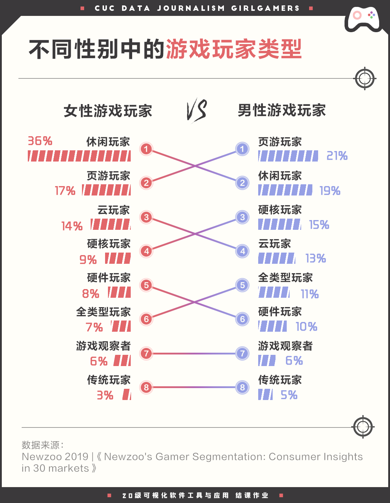
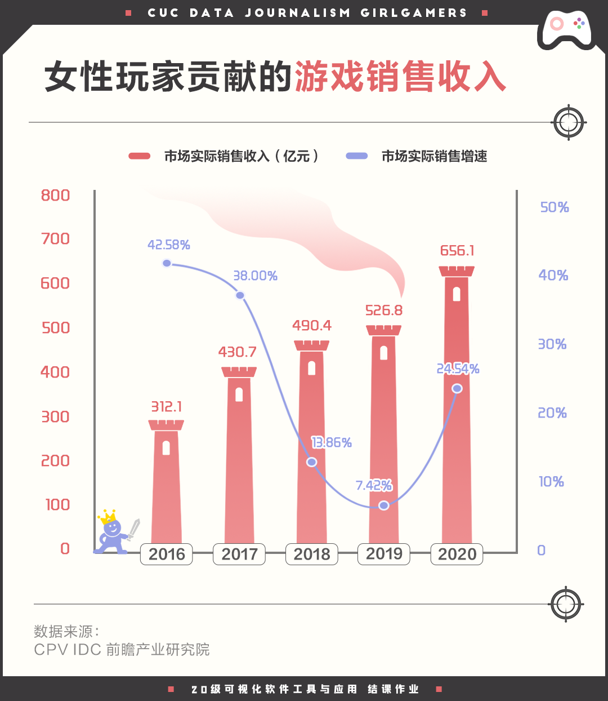
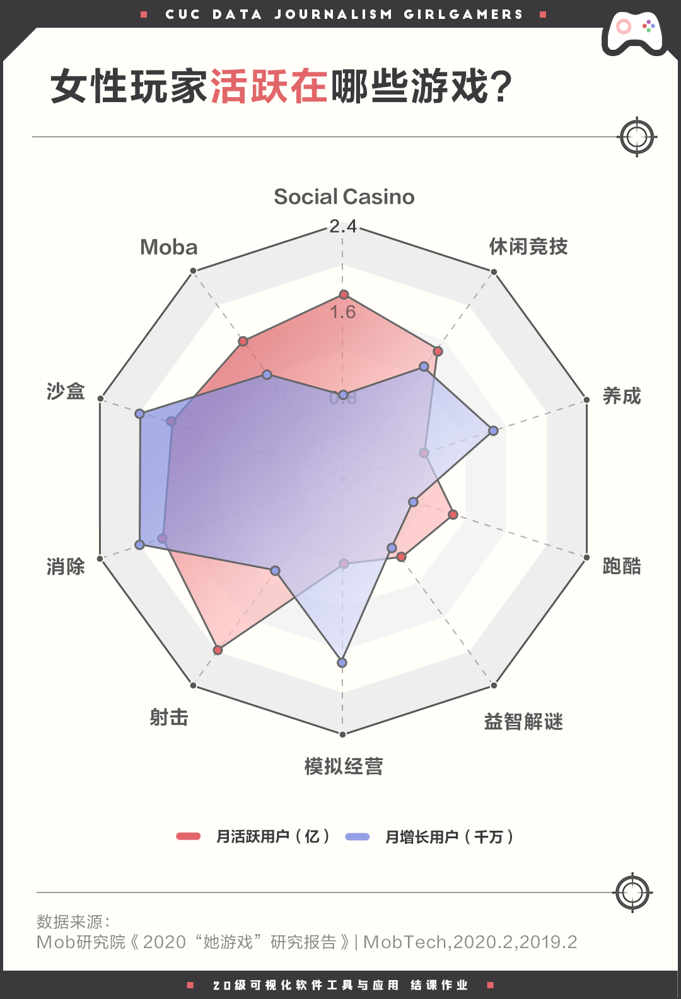
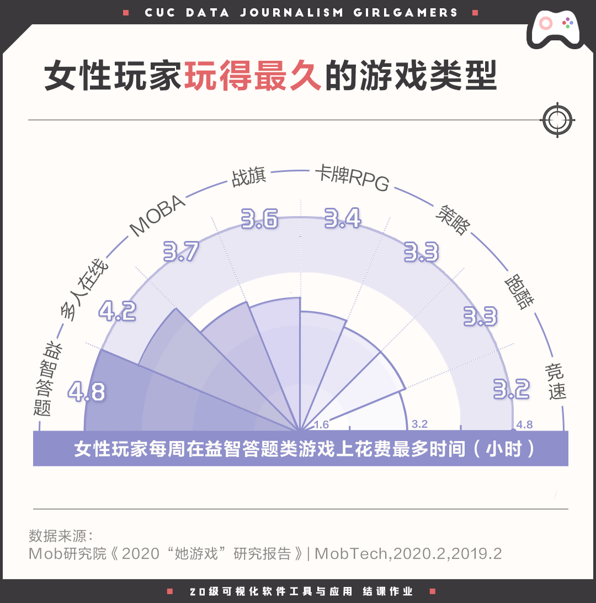
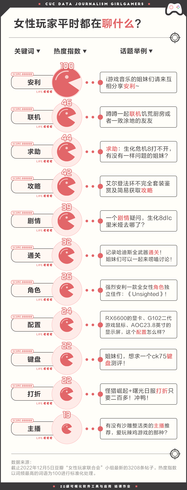
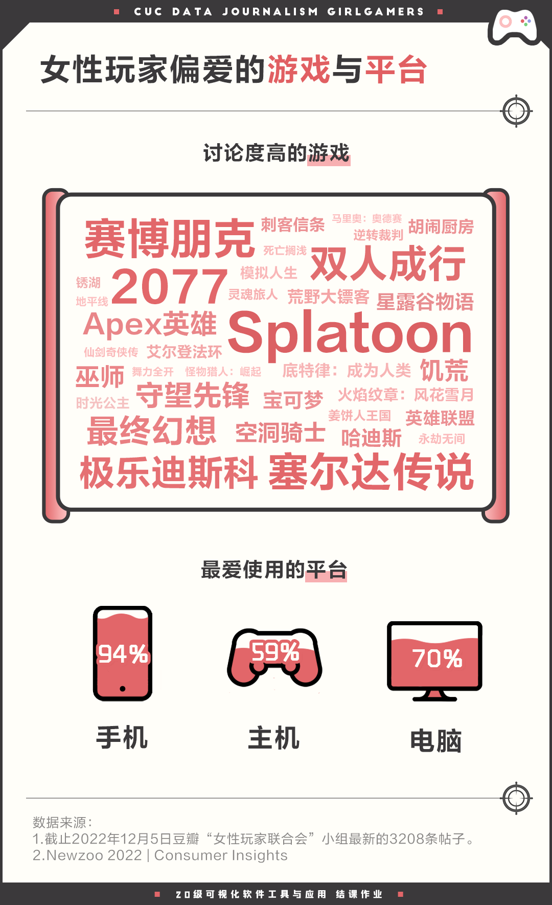
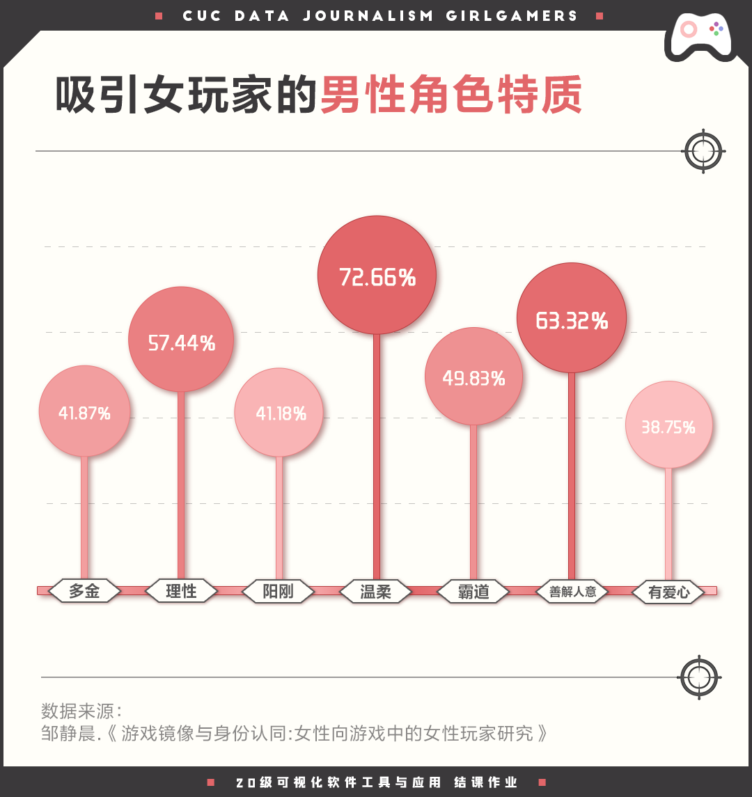
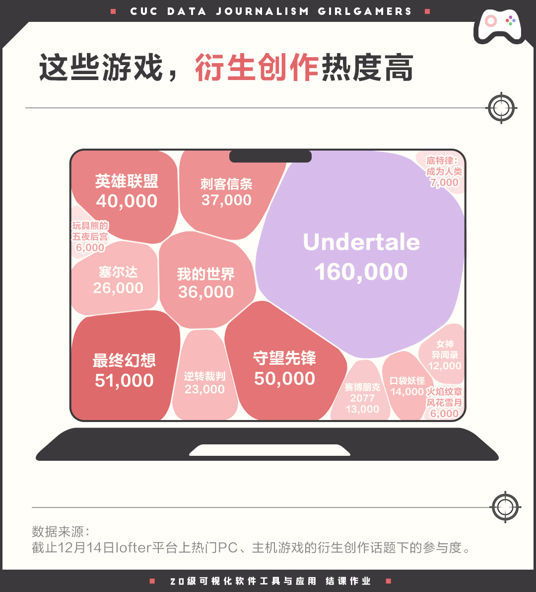
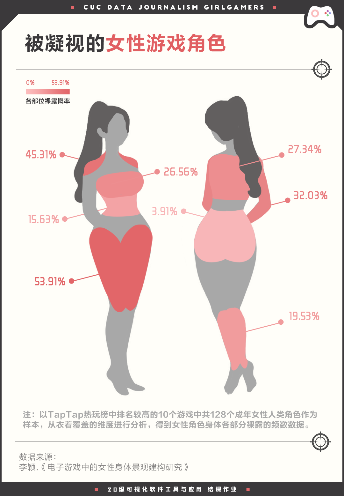

被"隐身"的女性玩家
从游戏发展历程来看，男性在较长的时间中一直占据着电子游戏的主体受众身份。但现在，电子游戏领域的性别格局已今非昔比。
根据Newzoo的调查，如今在全球范围内已有超过10亿的女性游戏爱好者。自2016年起，女性玩家人数占比就已经达到47%，几乎可以与男性玩家数量持平。
但是，女性玩家又为何会在游戏受众中"隐身"呢？
我们发现，在女性游戏爱好者中，占比最多的是休闲玩家：超三分之一的女性玩家都属于休闲玩家，远远超过男性中休闲玩家的比例。对于休闲玩家而言，游戏可以在碎片时间进行，玩游戏主要为了娱乐消遣，竞技性较弱。

休闲玩家的游戏过程往往是单人参与的，玩家与玩家之间的沟通和交流并不强，并且玩家的心态普遍比较平和。休闲玩家玩游戏的第一目的并不是打败对方或取得胜利，因此不过分关注游戏的输赢，是游戏中的平和派。竞技带来的激烈讨论较少作用在这类玩家身上。
对比男性玩家中占比最多的页游玩家，他们大多看重竞技、对抗，因此更愿意去讨论玩游戏时的策略、攻略，更愿意在游戏的相关讨论中发声，也能借助重大电竞赛事等契机获取更多的关注度。
同时，提供给女性广泛讨论游戏的平台本就乏善可陈。缺乏讨论环境与讨论欲望的结果正是女性休闲玩家在游戏的舆论场中的集体失声。尽管女性休闲玩家数量并不少，在游戏相关的讨论中却较少看到她们的身影，听到她们的声音。
但事实上，休闲玩家占比多并不影响女性玩家为游戏带来高额的收入。仅仅在2020年这一年中，女性玩家就为游戏市场带来了656亿元的收入。

有需求才会有供给，女性玩家是否存在，观察游戏市场就可以明显地感受到。不同于男性玩家对竞技的需求，女性玩家的需求更为感性、社交性更强。随着奇迹暖暖、恋与制作人等以女性为受众对象的游戏诞生，女性游戏的市场被打开，潜力也不断被挖掘。
根据前瞻产业研究院发布的女性游戏行业市场报告，2016-2020年我国女性玩家贡献的游戏销售收入逐年增长，且有继续增长的态势。而Playgroundz发布的研究显示，女性玩家在移动游戏的付费率紧追男性玩家，2018年全球有68%的移动游戏收入来自女性。
玩游戏，不用分性别
在知乎上有一个问题：女性是否不爱玩电子游戏，为什么？
1352个回答里，不少女性玩家现身说法表示事实并非如此。玩过近200款游戏的女性网友"粿条"点出了女性玩家不受重视的现状："现在许多打着一般向游戏幌子的游戏，其实主要照顾的是男玩家的感受。"许多所谓的"电子游戏"，在最初并不为女性而开发，考虑到剧情角色塑造的平等性与游戏中的性别偏见与性引导内容，同一游戏中的女性玩家的游玩体验可能远远不及男性玩家高。
刻板印象中的电子游戏，通常指的是偏重对抗性和竞技性的游戏，而女性会偏爱的益智类、休闲类、沙盒类等一众更偏重脑力、创造力的游戏时常被排除在外。网友"粿条"在提及偶像梦幻祭这款游戏时就谈到了女性向游戏被忽视的现状，"音游人大部分是男性，所以他们在盘点音游时，基本上全都会忽略这款游戏，因为它是女性向游戏。"
但刻板印象的存在并不意味着女孩子们就会因此放弃游戏带来的快乐，她们仍活跃在游戏世界的不同角落。

从宏观层面上看女性玩家的游戏偏好，射击、消除、沙盒三类游戏的女性玩家月活量最多，均达到1.5亿以上。从玩家的增加值来看，沙盒、消除、模拟经营三类游戏的女性玩家增长最多，其中沙盒类游戏和消除类游戏的女性玩家一年中增长了2000万。
聚焦到个体层面上，女性偏好的游戏从游戏时长中可窥一斑。益智答题类游戏深受女性玩家的喜爱，每周的平均游玩时长接近5小时。

相比于一盘就能玩上至少20分钟的对抗型游戏，益智答题类游戏更偏向于休闲与放松，可以在忙碌的生活、工作间隙随时打开玩上一局，虽然一局的时间不长，但是却胜在可以随开随玩，也不需要精神高度的投入，可以满足放松、娱乐消遣的心理需求。
使生活得到一些快乐与轻松，这是游戏诞生最根本的意义。
"但是游戏就是游戏，创造出来就是让人得到快乐的，快乐还分男女，太狭隘了。"
—— 知乎网友"阳台难以攻陷"
走近游戏猛女——！
在豆瓣小组"女性玩家联合会"中，聚集了国内的一批女性游戏爱好者。组员们自称猛女，在组里分享打游戏的经历，交流心得和经验。
组里聊得最多的话题是安利。组员们乐于推荐自己玩过的好游戏，也有许多新入坑的组员发帖求助有经验的"猛女们"给自己推荐好游戏。除此之外，大家还会寻找一起联机玩游戏的伙伴、寻求游戏相关的帮助、讨论游戏的角色和剧情。

我们筛选了近三个月的小组讨论，并整理出了"女性玩家联合会"中最高讨论度的游戏。不难发现，小组中PC游戏与主机游戏讨论度较高。著名游戏公司任天堂于2022年9月新鲜发布的第三人称射击游戏Splatoon3无疑成为了近期讨论中最热门的游戏。
当然，赛博朋克2077、塞尔达传说、双人成行等耳熟能详的高人气游戏作品也不会被"女性玩家联合会"中的猛女们错过。除了这些发售不超过五年的年轻游戏，高讨论度的游戏中不乏仙剑奇侠传、逆转裁判此类老牌游戏ip。

说到游戏平台，女玩家们最常使用的设备依次是手机、电脑和主机。手机游戏凭借其便捷性收获了最多的玩家，而PC端有最多的游戏种类，且本身功能多样，一直拥有较高的用户占有率。主机游戏的开发时间普遍较长，因此游戏的体验效果是最出色的，但游戏主机价格高昂，部分机器便携性较前两者更弱一些，因此选择为游戏购入专用设备的玩家会略少一些。
当游戏玩家们谈到游戏时，大家关心的内容总是如出一辙的。正如任何游戏玩家之间的讨论，女性玩家们在一起会讨论游戏的剧情角色，也会交流硬件配置与过关方法。女性玩家讨论的游戏并不仅仅包括女性向的游戏，而游玩游戏的平台在男女玩家中也没有明显的差别。
不必戴着有色眼镜来看游戏中的女性玩家，因为无论性别，所有的玩家都只是享受游戏本身的游戏爱好者。正如"女性玩家联合会"小组中的猛女们看待游戏的态度——
“我们不带偏见地玩任何平台的任何类型的游戏，这也是了解世界的一部分。”
她们的解构与重塑
女性玩家的心理很大程度决定了她们对于游戏的选择。那么，这些玩游戏的女孩子们，都在想什么？
探访以恋爱、养成为主要游戏内容的女性向游戏玩家时，多数受访者都表示很抵触游戏中的偏见，即：认为女性都是柔弱的，需要被保护的。她们更希望自己在游戏中不再是被保护的角色，希望树立起独立、勇敢的形象。这从女性玩家偏爱的男性角色特质中可见一斑。
研究女性向游戏玩家的报告显示，最吸引女玩家的两个男性角色特质分别是温柔和善解人意。这反映了女性希望可以获得男性平等的尊重和理解，而不是忽视女性自身意志的男性单方面的强势的保护。虽然"霸道""阳刚"等传统特质仍然流行，但能够看出，女性正通过在游戏中对男性角色的塑造来表达对旧的性别身份认知的挑战与反思，建立对独立女性的性别身份认同。

除却在女性向游戏中对角色本身进行塑造之外，女性玩家还热衷通过二创来对游戏剧情和角色进行解读与再创作。优质衍生创作的传播反哺了游戏作品本身，也为游戏作品吸引了更多以女性为主体的受众。
我们观察了女性用户占比接近九成的国内最大的同人作品分享平台Lofter。在这一平台上，有大量的女性玩家在这里分享她们为游戏创作的同人小说、同人漫画，通过二创的形式抒发自己游玩后的创作欲，并与其他玩家进行分享。
热门的手机游戏通常拥有大量衍生创作，而PC游戏与主机游戏也并不逊色。2015年发售的游戏Undertale以16万参与数遥遥领先于其他热门PC游戏、主机游戏，而最终幻想、守望先锋等游戏也有5万余参与数。

与女性在游戏中重塑自我身份、得到积极情感暗示的期望相反，目前游戏市场中，女性角色的身体仍被视为一种能引起性快感的商品而存在。
电子游戏发展至今日，女性角色的身体在视觉呈现上的裸露情况较之以往得到了一定改善，但是，她们的身体依然呈现出高度性感的特点。她们可能不再有大片的身体裸露在外，但是，通过紧密贴合身体线条的衣着和对关键部位的裸露处理，她们依然被贴上"性感"的标签，放置于男性凝视的目光下被观赏。这与男性角色的裸露情况相比可谓云泥之别。

电子游戏作为关注愉悦和宣泄的娱乐产品，并不会总向受众呈现一种能够反思社会状态的冲突。作为女性玩家，在娱乐中也应当警惕设计者是否无意识地在游戏中传递对女性的规训。玩家作为能动方，可以有意识地探究自己情绪的来源，打破"第四面墙"。
无论是游戏的制作还是消费，女性作为近十年新兴的独特群体都拥有全新的视角，在未来的游戏产业发展中，女性从业者的增加是可以展望的。在被誉为第九艺术的游戏中加入更多女性视角，也不失为一种独特的选择。
参考文献
- 虚实双重压力与聚合抵抗——"女性玩家联合会"的亚文化研究[J]. 慕海昕,张自中,彭兰. 西北师大学报(社会科学版). 2022,59(05)
- 电子游戏中的女性身体景观建构研究[D]. 李颖.天津师范大学.2022.11
- 从认识到意动：女性向电子游戏玩家的消费行为研究——以女性向游戏《食物语》为例[D]. 栗一丹.重庆大学.2021.06
- 传播学视域下电子游戏中女性角色的变迁研究——以20世纪80年代至今中外角色扮演类电子游戏为例[D]. 李雪莹.北京外国语大学.2022.05
- 中国音像与数字出版协会游戏出版工作委员会《2019年中国游戏产业报告》
- Mob研究院《2020"她游戏"研究报告》
- 网易《LOFTER用户兴趣消费报告》
- 前瞻产业研究院《2021年中国女性游戏行业市场规模及发展前景分析》
- 知乎《女性是否不爱玩电子游戏，为什么？》
- Mary Brune. Zooming in on Female Gamers with Consumer Insights Data
- Sander Bosman. Women Account for 46% of All Game Enthusiasts: Watching Game Video Content and Esports Has Changed How Women and Men Alike Engage with Games